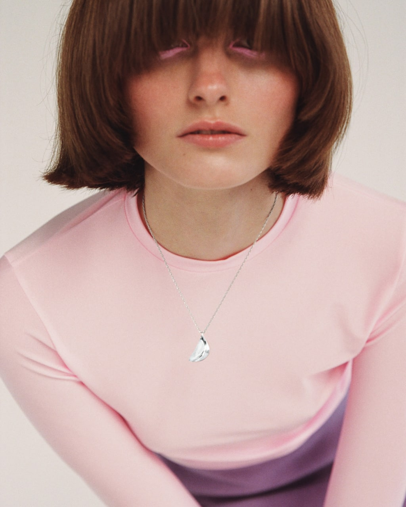

МОДА
КРАСА
СТИЛЬ
ПОДКАСТИ
ПОДІУМ
НОВИНИ МОДИ


Made in Ukraine:
наймодніші сукні з довгими рукавами
7 трендових пальт, на
які варто звернути увагу цього сезону
Анімалістичні
принти в колекціях осінь-зима 2022/2023
У новому сезоні український бренд LUTIKI представив прикраси у нових матеріалах та формах: Соня Солтес, дизайнерка бренду, випустила бестселери марки у сріблі. Так, улюблені всіма і найбільш знакові браслет-спіраль, підвіска у формі насінини та каблучка-лого тепер з’явилися у білому металі.Соня Солтес поповнила лінійку артефактів від LUTIKI і новою прикрасою. Нею стала символічна підвіска у формі зубка часнику. Дизайнерка знаходить натхнення у садівництві та вирощує овочі на своїй мікрофермі.
Срібні прикраси LUTIKI ексклюзивно доступні онлайн на сайті бренду, а побачити їх можна на виставці Tripolar у Парижі.